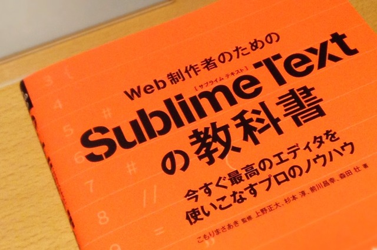
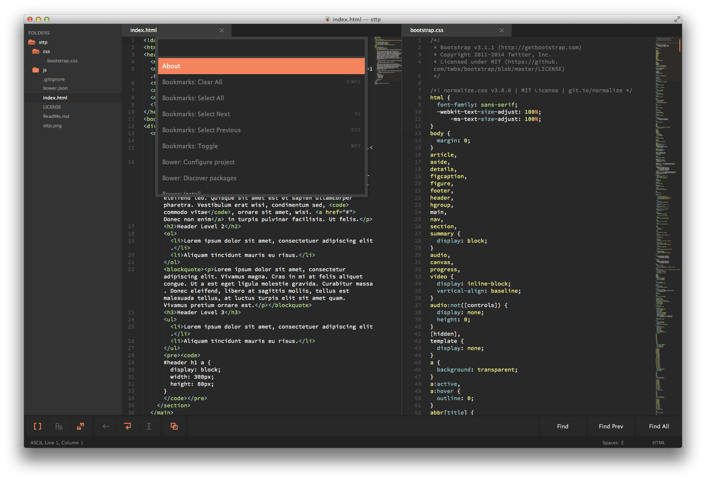

先日（2014/3/20）発売された 「Web制作者のためのSublime Textの教科書」を頂戴いたしました！買おうと思っていたところのまさかのアレで、一人小躍りしてしまいました。関係者の皆さま、ありがとうございます！！
一通り読み終えましたが、設定やショートカットの基礎から業務で使う上でのポイントなどを押さえており、「教科書」の名の通りの内容となっていました。簡単ではありますが、読んだ所感などをここに記しておきます。
Sublime Textを使い始めて1年半ぐらい経ちますが、そこからあまり使い方をアップデートしてなかったなぁと実感。プロジェクトの設定やスニペットのカスタマイズなども調べればできると思いつつも実行してなかったので、早速活用しています。
Sublime Textは、ある程度のカスタマイズで結構使えるというのが私の中ではキモでして、使い方のアップデートができていなかった要因でもあります。私自身は、カスタマイズができるとそれに精を出しかねないのですが、Sublime Textの必須パッケージともいえるPackage Controlのおかげで、手軽に拡張して便利に使えるところが、それをせずに済んでいるとこかなと。
で、そのパッケージについてはとてもたくさんあるわけですが、その中でも著者の皆さんがおすすめする便利なパッケージを、結構なページ数を割いて解説されています。
「ここがいいよ！」というブログ記事は見かけますが、設定からカスタマイズまで幅広い情報が一気に読めるのは、書籍ならではないかと思います。特に使い始めようとしてる方や、ビッグウェーブに乗ったものの、あまりうまく活用できてないなぁと感じる方におすすめできる内容です。情報がまとまっているので、ネットであちこちの情報を拾う時間を考えると、2,400円（電子版は2,000円）の投資は十分に価値があるでしょう。
インプレスジャパンさんのサイトでは、目次や1章が無料で公開されているので、買う前に内容も把握できますね。巻末にはショートカットと環境設定の一覧があるので、少しでも気になるところがあれば購入して損はないと思います。
またWeb制作者のためのSublime Textの教科書のFacebookページで追加情報なども掲載されるようですので、買ったあとのサポートも期待できるんじゃないでしょうか。
というわけで、情報は新しいうちに入れておくのがよいと思うので、ご購入はお早めに！改めまして関係者のみなさま、お疲れさまでした＆ありがとうございました！

私のSublime Text（ここで）
Facebookページにて、「あなたのSublime Textを見せてください」という企画をやってますので、私のやつをここで晒しておきます。

{
"theme": "predawn.sublime-theme",
"color_scheme": "Packages/Predawn/predawn.tmTheme",
"font_face": "Source Code Pro",
"font_size": 13.0
}
テーマはオレンジが新鮮だったのでPredawnを、カラースキームも同じものを使っています。フォントとそのサイズはテーマ限らず、Source Code Proの13ptです。ちなみにアイコンはMinimalを使ってます。